滑走路とターミナルの建設（Stackレイアウト基礎）
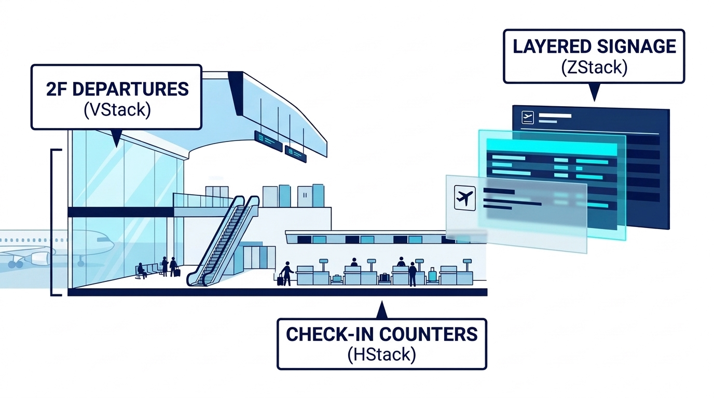
✈️ 羽田・成田でのたとえ：空港の「縦・横・奥行き」の骨組み！
VStack（2F Departures / 1F Arrivals）：階ごとに縦に積み上げる構造！HStack（Check-in Counters）：A・B・Cカウンターみたいに横に並べる構造！ZStack（Layered Signage）：地図の上に案内板を重ねるみたいに手前と奥に重ねる構造！
VStack(spacing: 0) {
// 縦に並べる（入力エリア ＋ リスト）
HStack {
// 横に並べる（テキスト欄 ＋ 追加ボタン）
TextField("やることを入力...", text: $newTodoTitle)
Button("追加") { addTodo() }
}
List { ... }
}🔄 Flutterとのブリッジ
Column ➡️ VStackRow ➡️ HStackStack ➡️ ZStack
🌏 東京駅・道案内英語
- Departures：出発ロビー
- Check-in counter：搭乗手続きカウンター
- Signage：案内標識
搭乗人数カウンターと安全ゲート（@State ＆ .disabled）
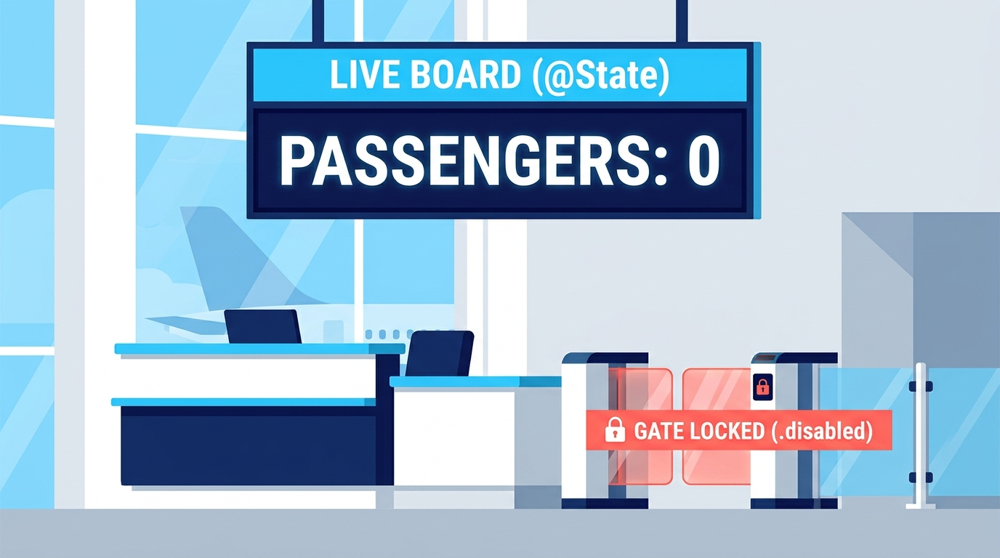
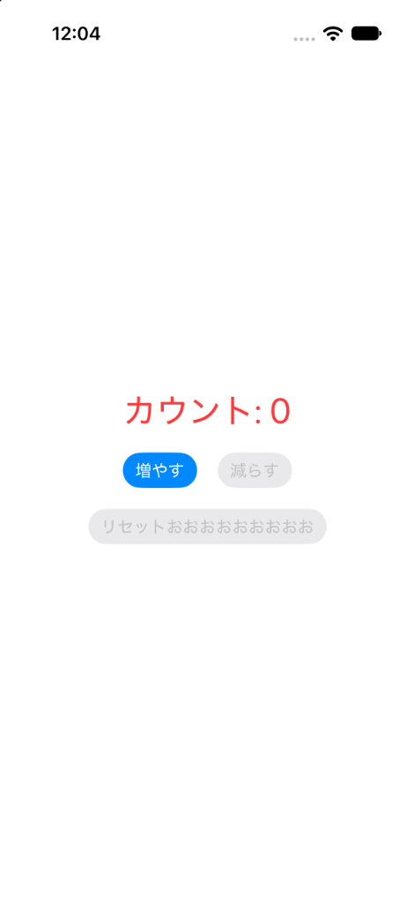
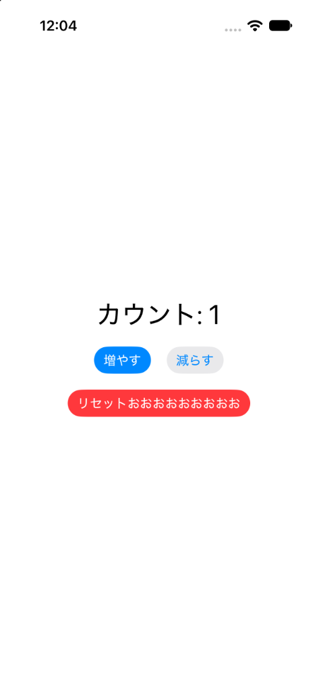
✈️ 羽田・成田でのたとえ：連動する電光掲示板と自動ロックゲート！
@State は空港の「電光掲示板（Live Board）」。変数の数字が変わった瞬間に、それに繋がっている画面の見た目（赤文字・ボタンの色）が全自動で書き換わるの！
さらに .disabled(count == 0) は「乗客が0人の時は『減らす・リセット』のゲートを自動でロックして押せなくする安全装置」よ。
@State private var count = 0
Text("カウント: \(count)")
.foregroundStyle(count == 0 ? .red : .primary)
Button("減らす") {
count = max(0, count - 1)
}
.disabled(count == 0) // 👈 0の時はゲートロック！🔄 Flutterとのブリッジ
わざわざ setState(() { ... }) で囲まなくても、@State 変数を書き換えるだけで画面が自動で再描画される神仕様！
🌏 東京駅・道案内英語
- Boarding gate：搭乗口（改札口）
- Locked / Out of service：閉鎖中・利用停止
パスポートIDとLiquid Glass展望バー（ToDo ＋ .glassEffect）
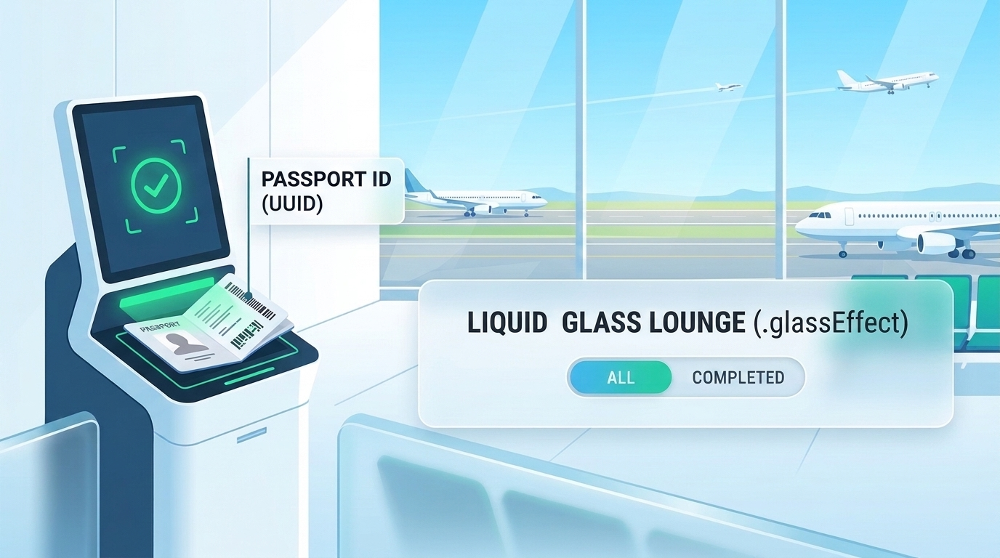
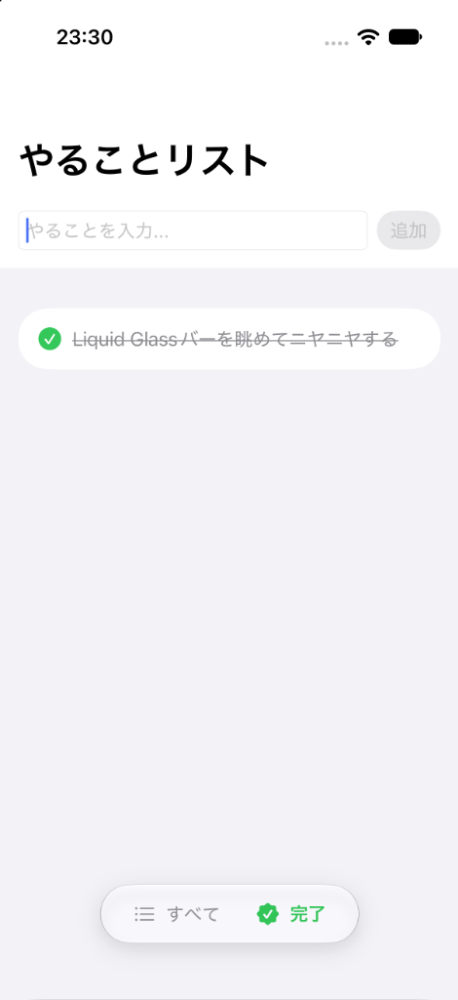
✈️ 羽田・成田でのたとえ：重複しないパスポート番号 ＆ ガラス張り展望バー！
ToDo: Identifiable（UUID） は乗客1人ひとりの「パスポート番号」。これがあるから入国審査（ForEach）で誰が誰だか見分けられて、スワイプ削除も正確に動く！
そしてはやとが見つけた最新API .glassEffect(.regular, in: Capsule()) で、空港の展望デッキみたいなぷかぷか浮く液体ガラスバーが誕生したわ！
struct ToDo: Identifiable {
let id = UUID() // 👈 重複しないパスポート番号！
var title: String
var isCompleted: Bool = false
}
// 最新のLiquid Glass効果！
.padding(.horizontal, 20)
.padding(.vertical, 14)
.glassEffect(.regular, in: Capsule())
.shadow(color: .black.opacity(0.12), radius: 10, y: 5)🔄 Flutterとのブリッジ
Flutterだと BackdropFilter ＋ ImageFilter.blur で苦労するところを、SwiftUIならOS標準の .glassEffect 1行でリアルな屈折ガラスに！
🌏 東京駅・道案内英語
- Passport control：出入国審査
- Observation deck：展望デッキ
第2ターミナル独立と連絡シャトル（部品化 ＆ @Binding）
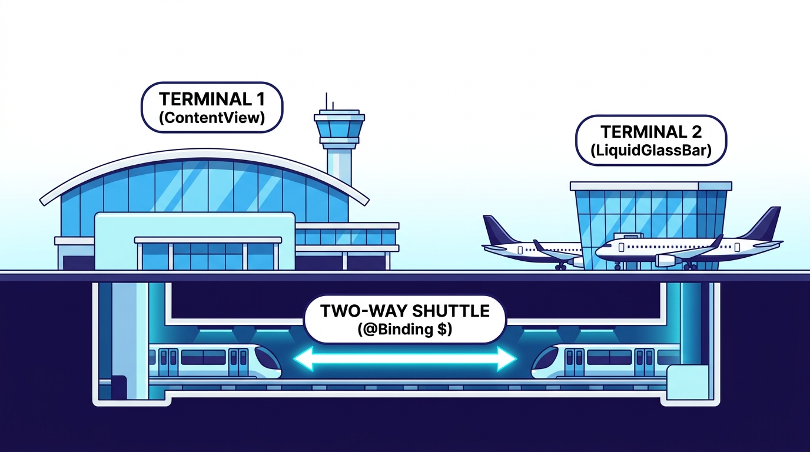
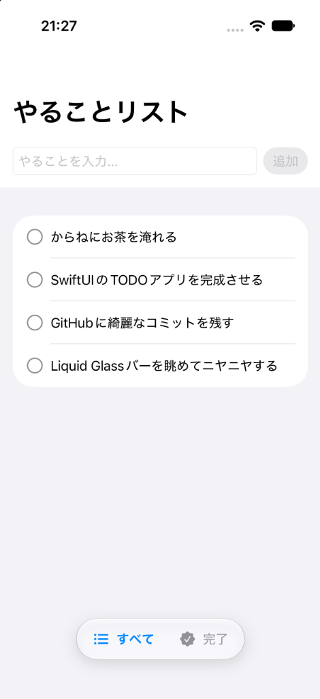
✈️ 羽田・成田でのたとえ：本館（第1）と別棟（第2）を繋ぐ地下シャトル！
1つのファイルに全部詰め込むと巨大すぎて迷子になるから、すりガラスバーを「第2ターミナル（LiquidGlassBar.swift）」として別ファイルに独立させたわ！
そして本館（ContentView）の @State と別棟の @Binding を $（ドルマーク） で繋ぐことで、乗客やデータが双方向に往き来できる連絡シャトルが開通したの！
// 本館（ContentView.swift）から $ をつけて連絡シャトルを繋ぐ！
LiquidGlassBar(selectTabs: $selectTabs)
// 別棟（LiquidGlassBar.swift）で @Binding として受け取る！
struct LiquidGlassBar: View {
@Binding var selectTabs: Todotab
...
}🔄 Flutterとのブリッジ
別ファイルのWidgetに切り出してコールバック関数を渡す代わりに、SwiftUIでは @Binding ＋ $ だけで親の状態を直接書き換えられるわ！
🌏 東京駅・道案内英語
- Connecting shuttle：連絡シャトル
- Terminal 1 / Terminal 2：第1・第2ターミナル
ボーディングブリッジでVIPラウンジへ（NavigationLink ＆ 詳細画面）
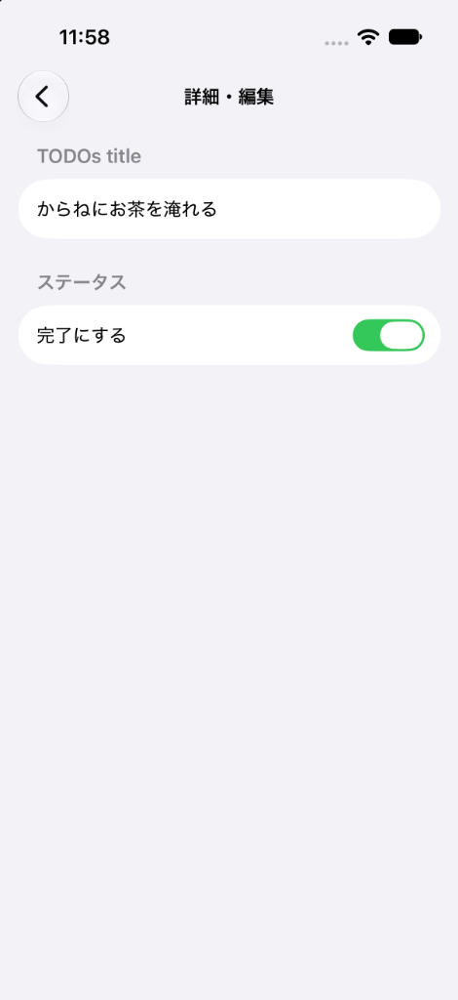
✈️ 羽田・成田でのたとえ：搭乗口からブリッジを渡ってVIPラウンジへ！
リストの行を NavigationLink という「搭乗ゲート」で包むと、タップした瞬間にボーディングブリッジを渡って「VIPラウンジ（TodoDetailView）」へ移動できる！
ラウンジ内の Form や Toggle でタイトル・完了ステータスを変更すると、@Binding 経由で本館のリストにも即座に反映されるわ！
// 本館リストの搭乗ゲート
NavigationLink {
TodoDetailView(todo: $todo) // 行き先！
} label: {
// リスト1行分の見た目
}
// VIPラウンジ（TodoDetailView.swift）
Form {
Section("TODOs title") {
TextField("タイトルを編集", text: $todo.title)
}
Section("ステータス") {
Toggle("完了にする", isOn: $todo.isCompleted)
}
}🔄 Flutterとのブリッジ
Navigator.push(...) ＋ pop で戻り値を返す手間はゼロ！NavigationStack ＋ NavigationLink だけで戻るボタンもスワイプ戻るも自動！
🌏 東京駅・道案内英語
- Boarding bridge：搭乗橋
- Transfer / Transit：乗り継ぎ
国際線手荷物ルールと24時間コインロッカー（Codable ＆ UserDefaults）
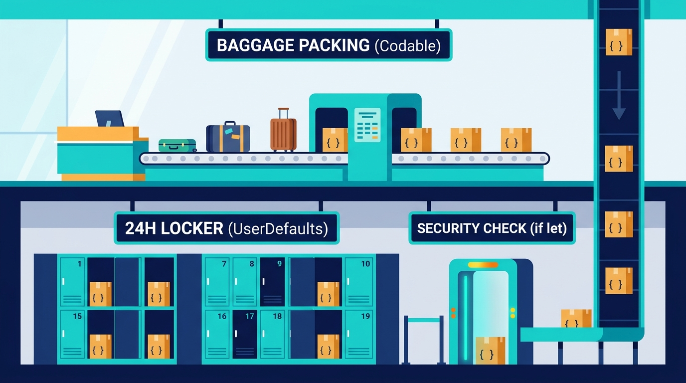
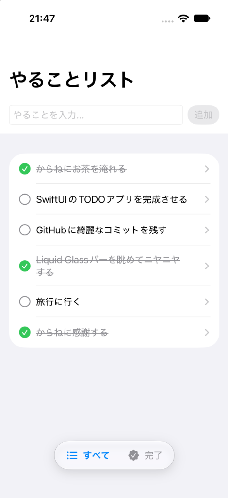
✈️ 羽田・成田でのたとえ：荷物の梱包（JSON化）＆ 地下コインロッカー！
アプリを終了してもデータが消えないのは、Codable でToDoを「飛行機に積める規定の段ボール（JSONデータ）」に梱包して、空港の「24時間地下コインロッカー（UserDefaults）」に預けているから！
起動時にロッカーから取り出す時は、if let（保安検査のアンラップ）で「中身が空っぽ（nil）じゃないか」を安全にチェックしてから復元するのよ！
// 1. 梱包（JSONに変換）してロッカーにしまう
private func saveTodos() {
if let encoded = try? JSONEncoder().encode(todos) {
UserDefaults.standard.set(encoded, forKey: saveKey)
}
}
// 2. 保安検査（if let でアンラップ）して取り出す
private func loadTodos() {
if let data = UserDefaults.standard.data(forKey: saveKey),
let decoded = try? JSONDecoder().decode([ToDo].self, from: data) {
todos = decoded
}
}🔄 Flutterとのブリッジ
shared_preferences ＋ jsonEncode / jsonDecode と全く同じ原理！ただしSwiftは Codable を1語書くだけで変換処理の自動生成までやってくれるわ！
🌏 東京駅・道案内英語
- Baggage claim：手荷物受取所
- Coin locker / Storage：コインロッカー・荷物預かり
- Security check：保安検査
空港おまけコラム：はやとが夜に聞いた神質問まとめ
🪪 protocol vs struct 問題
protocol（例：View, Identifiable, Codable）は「パイロット免許や航空法のルールブック」。
struct（例：ContentView, ToDo）は「そのルールを守って作られた本物の飛行機（実体）」！
var body を var bodu とタイプミスすると「航空法違反よ！」と怒られるわ。
🛂 なぜ同じ空港内なら import 不要？
JavaやFlutterは部屋ごとに鍵がかかっていて毎回 import が必要だけど、Swiftは同じプロジェクト（同じ空港の敷地内）なら最初から全員顔パス（internal）！
import SwiftUI だけは「Apple本社から外部機材を借りる手続き」だから書くのよ。
🔐 @State の private と関数の配置
@State は「管制塔の秘密ボタン」だから、他の画面に勝手に押されないよう private（関係者以外立入禁止） にするのが鉄則！
そしてコードは「変数 ➡️ body（見た目）➡️ private func（裏方処理）」の順に書くと、就活の面接官も一目で惚れる綺麗なコードになるわ！